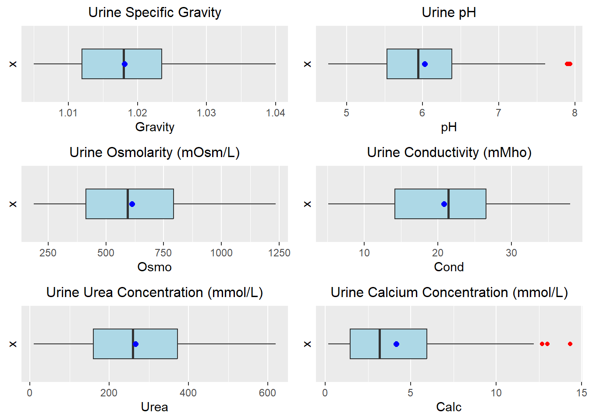
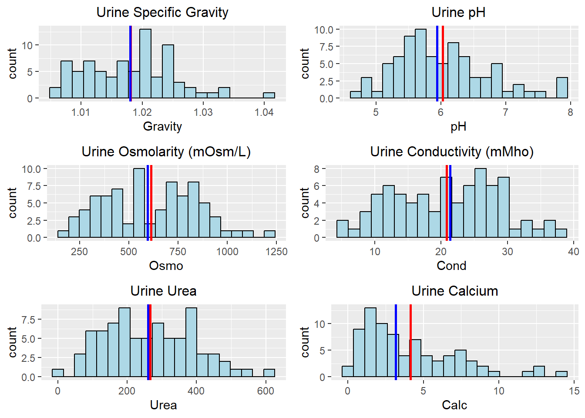
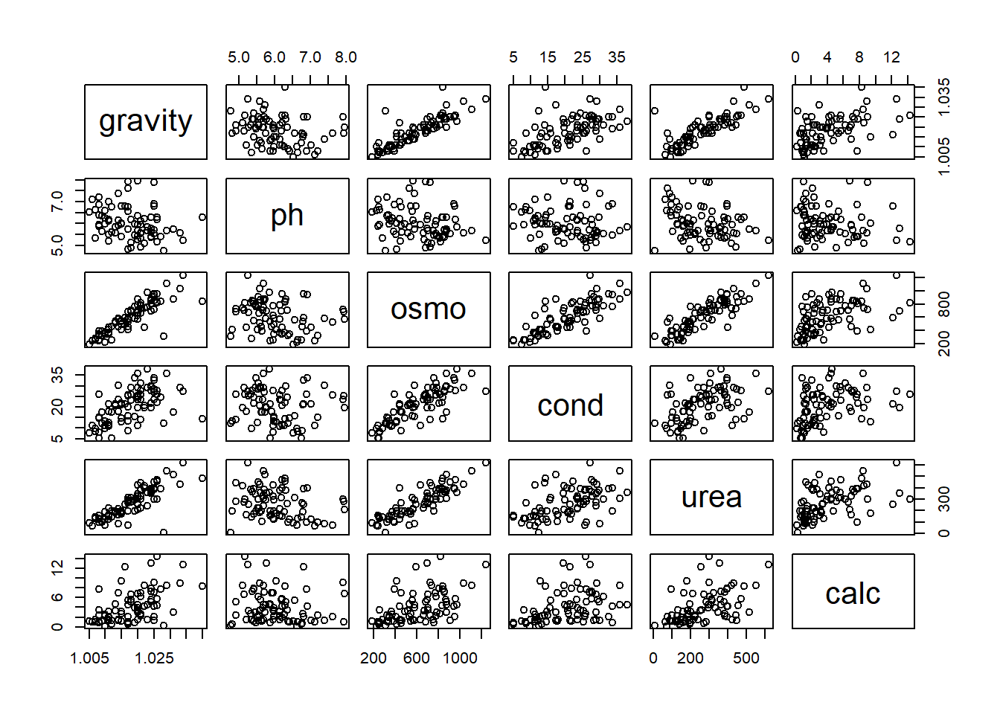
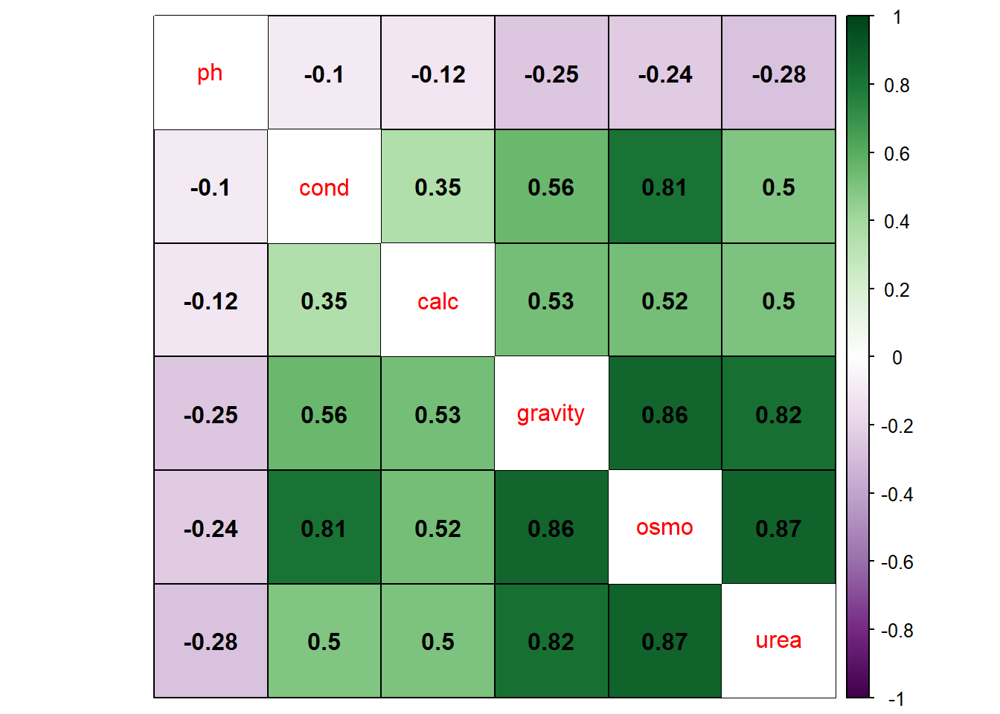
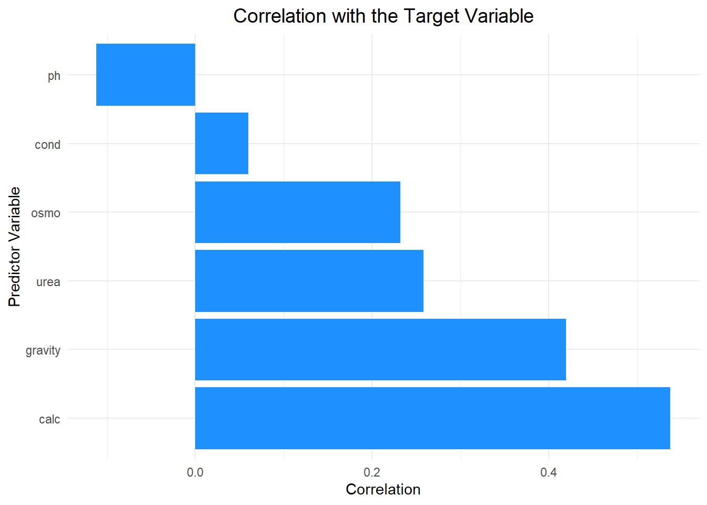
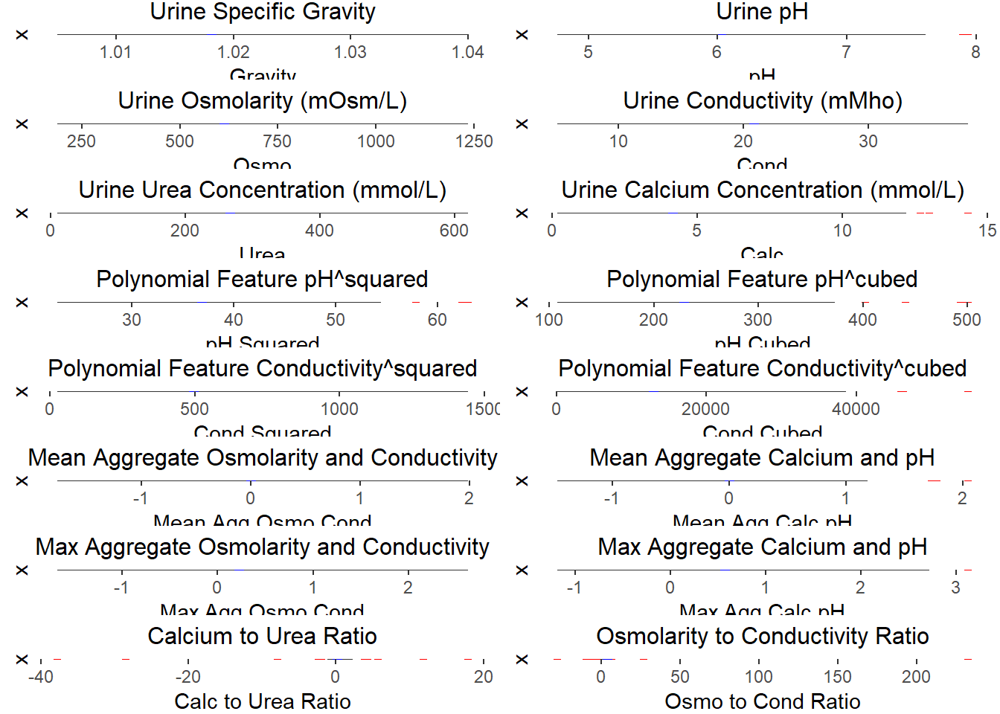
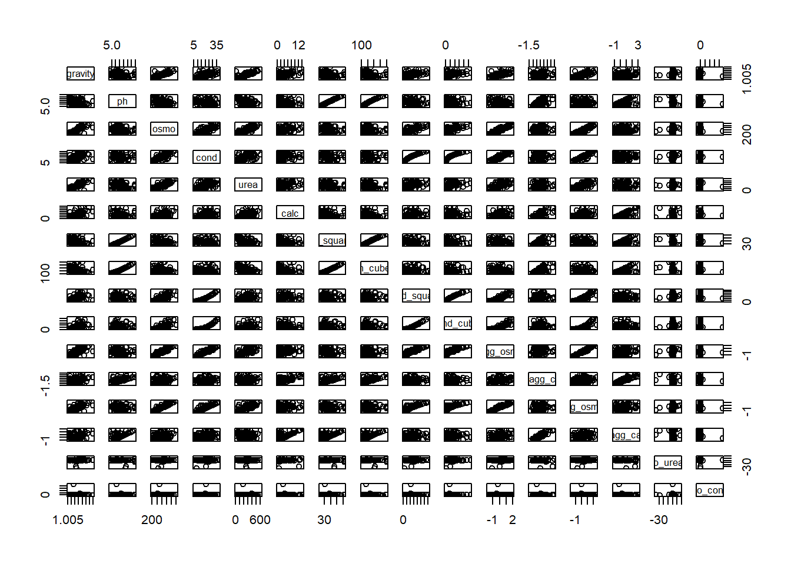

suppressPackageStartupMessages({
library(caret)
library(AppliedPredictiveModeling)
library(dplyr)
library(ggplot2)
library(tidyr)
library(gridExtra)
library(skimr)
library(outliers)
library(gridExtra)
library(reshape2)
library(corrplot)
library(stats)
})Group 6 Final Project
Kidney Stone Prediction based on Urine Analysis
Import Packages
Read in CSV File
# Read CSV into data frame
kidney_data <- read.csv("kindey_stone_urine_analysis.csv")Exploratory Data Analysis (EDA)
Initial Inspection
# Check first & last five rows and dimensions of data frame
dim(kidney_data)[1] 79 7head(kidney_data) gravity ph osmo cond urea calc target
1 1.021 4.91 725 14.0 443 2.45 0
2 1.017 5.74 577 20.0 296 4.49 0
3 1.008 7.20 321 14.9 101 2.36 0
4 1.011 5.51 408 12.6 224 2.15 0
5 1.005 6.52 187 7.5 91 1.16 0
6 1.020 5.27 668 25.3 252 3.34 0tail(kidney_data) gravity ph osmo cond urea calc target
74 1.022 5.09 736 19.8 418 8.53 1
75 1.025 7.90 721 23.6 301 9.04 1
76 1.017 4.81 410 13.3 195 0.58 1
77 1.024 5.40 803 21.8 394 7.82 1
78 1.016 6.81 594 21.4 255 12.20 1
79 1.015 6.03 416 12.8 178 9.39 1# Identify data types
str(kidney_data)'data.frame': 79 obs. of 7 variables:
$ gravity: num 1.02 1.02 1.01 1.01 1 ...
$ ph : num 4.91 5.74 7.2 5.51 6.52 5.27 5.62 5.67 5.41 6.13 ...
$ osmo : int 725 577 321 408 187 668 461 1107 543 779 ...
$ cond : num 14 20 14.9 12.6 7.5 25.3 17.4 35.9 21.9 25.7 ...
$ urea : int 443 296 101 224 91 252 195 550 170 382 ...
$ calc : num 2.45 4.49 2.36 2.15 1.16 3.34 1.4 8.48 1.16 2.21 ...
$ target : int 0 0 0 0 0 0 0 0 0 0 ...Data Cleaning & Univariate Analysis
# Check for missing values
missing_data <- sum(is.na(kidney_data))
missing_data[1] 0Create Boxplots
suppressWarnings({
# Define a function to create boxplots with mean points
create_boxplot <- function(data, y_var, title, ylab) {
mean_val <- mean(data[[y_var]], na.rm = TRUE)
plot <- ggplot(data = data, aes_string(y = y_var)) +
geom_boxplot(outlier.color = "red", fill = "lightblue") +
scale_x_discrete() +
labs(title = title, y = ylab) +
coord_flip() +
geom_point(aes(x = 0, y = mean_val),
shape = 16,
size = 2,
color = "blue") +
theme(plot.title = element_text(hjust = 0.5, size = 12))
return(plot)
}
# Create boxplots for each variable
plot1 <- create_boxplot(kidney_data, "gravity", "Urine Specific Gravity", "Gravity")
plot2 <- create_boxplot(kidney_data, "ph", "Urine pH", "pH")
plot3 <- create_boxplot(kidney_data, "osmo", "Urine Osmolarity (mOsm/L)", "Osmo")
plot4 <- create_boxplot(kidney_data, "cond", "Urine Conductivity (mMho)", "Cond")
plot5 <- create_boxplot(kidney_data, "urea", "Urine Urea Concentration (mmol/L)", "Urea")
plot6 <- create_boxplot(kidney_data, "calc", "Urine Calcium Concentration (mmol/L)", "Calc")
# Arrange boxplots in a 3x2 matrix
grid.arrange(
arrangeGrob(plot1, plot2, ncol = 2),
arrangeGrob(plot3, plot4, ncol = 2),
arrangeGrob(plot5, plot6, ncol = 2),
ncol = 1
)
})
Further investigate Outliers
# Grubbs' test for single outlier
grubbs_test_ph <- grubbs.test(kidney_data$ph, type = 10)
grubbs_test_calc <- grubbs.test(kidney_data$calc, type = 10)
# Print Grubbs' test results
cat("Grubbs' test for ph:\n")Grubbs' test for ph:print(grubbs_test_ph)
Grubbs test for one outlier
data: kidney_data$ph
G = 2.63910, U = 0.90956, p-value = 0.2797
alternative hypothesis: highest value 7.94 is an outliercat("Grubbs' test for calc:\n")Grubbs' test for calc:print(grubbs_test_calc)
Grubbs test for one outlier
data: kidney_data$calc
G = 3.12910, U = 0.87286, p-value = 0.04969
alternative hypothesis: highest value 14.34 is an outlierThe Grubbs’ test was used to identify potential outliers in the kidney data, specifically focusing on the highest values for pH and calcium concentration.
pH: The test suggests that the highest pH value (7.94) is likely not a true outlier. The p-value (0.28) is relatively high, meaning it’s fairly common to observe such a value if it actually belongs to the same population as the other pH measurements.
Calcium Concentration: The test provides weak evidence for the highest value (14.34) being a potential outlier. The p-value (0.05) is lower than for pH, but it might not be statistically significant depending on the chosen threshold (commonly 0.05). This suggests there’s a chance this value could be an outlier, but more evidence is needed for a definitive conclusion. Factors like a larger sample size or additional investigation could help clarify this.
In simpler terms, the tests don’t definitively prove whether the values are true outliers, but they assess the likelihood of them being outliers based on their extremeness compared to the rest of the data. The results suggest the high pH value is likely not an outlier, while the high calcium concentration might be one, but more evidence is needed for confirmation.
# Function to calculate z-scores for a vector
calculate_z_scores <- function(x) { (x - mean(x)) / sd(x)}
# Set the z-score threshold for outlier detection
z_score_threshold <- 2.5
# Calculate z-scores for pH & calc
ph_z_scores <- calculate_z_scores(kidney_data$ph)
calc_z_scores <- calculate_z_scores(kidney_data$calc)
# Identify outliers based on z-scores
ph_outliers <- kidney_data %>%
filter(abs(ph_z_scores) > z_score_threshold) %>%
select(ph)
calc_outliers <- kidney_data %>%
filter(abs(calc_z_scores) > z_score_threshold) %>%
select(calc)
# Print the outliers
#print(ph_outliers)
#print(calc_outliers)
# Function to apply Dixon's Q test if sample size is between 3 and 30
apply_dixons_q_test <- function(data, column_name) {
column_data <- data[[column_name]]
sample_size <- length(column_data)
if (sample_size >= 3 && sample_size <= 30) {
result <- dixon.test(column_data, opposite = TRUE)
return(result)
} else {
return(paste("Sample size for", column_name, "is", sample_size, "which is outside the range of 3-30"))
}
}
# Perform Dixon's Q test on pH outliers
ph_test_results <- apply_dixons_q_test(ph_outliers, "ph")
cat("Dixon's Q Test for pH Outliers:\n")Dixon's Q Test for pH Outliers:print(ph_test_results)
Dixon test for outliers
data: column_data
Q = 0.5, p-value = 1
alternative hypothesis: lowest value 7.9 is an outlier# Perform Dixon's Q test on calc outliers
calc_test_results <- apply_dixons_q_test(calc_outliers, "calc")
cat("Dixon's Q Test for Calc Outliers:\n")Dixon's Q Test for Calc Outliers:print(calc_test_results)
Dixon test for outliers
data: column_data
Q = 0.19277, p-value = 0.3487
alternative hypothesis: lowest value 12.68 is an outlierDixon’s Q Test (for identified z-score outliers):
This test was applied only to the potential outliers identified by z-scores (assuming they were true outliers). It assesses how extreme these potential outliers are compared to their nearest neighbors within the subset of potential outliers.
pH: The Dixon’s Q test result (p-value = 1) suggests that the potential outlier identified by z-scores (lowest value, 7.9) is likely not a true outlier. There’s a high probability it originates from the same population as the other pH measurements.
Calcium Concentration: The test result (p-value = 0.3487) provides weak evidence for the potential outlier identified by z-scores (lowest value, 12.68) being a true outlier. The p-value is not statistically significant at common thresholds (e.g., 0.05). There’s a chance it could be an outlier, but more evidence is needed.
Overall:
While z-scores identified potential outliers in calcium concentration, further analysis using Dixon’s Q test suggests these might not be true outliers. The pH measurements seem to have no outliers based on both methods. It’s important to consider the limitations of these methods, especially sample size requirements for Dixon’s Q test.
Create Histograms to Investigate Distributions Further
# Define a function to create histograms with mean and median lines
create_histogram <- function(data, x_var, title, xlab) {
mean_val <- mean(data[[x_var]], na.rm = TRUE)
median_val <- median(data[[x_var]], na.rm = TRUE)
hist <- ggplot(data = data, aes_string(x = x_var)) +
geom_histogram(bins = 20, color = "black", fill = "lightblue") +
geom_vline(xintercept = mean_val, color = "red", linetype = "solid", linewidth = 1) +
geom_vline(xintercept = median_val, color = "blue", linetype = "solid", linewidth = 1) +
labs(title = title, x = xlab) +
theme(plot.title = element_text(hjust = 0.5, size = 12))
return(hist)
}
# Create histograms for each variable
hist1 <- create_histogram(kidney_data, "gravity", "Urine Specific Gravity", "Gravity")
hist2 <- create_histogram(kidney_data, "ph", "Urine pH", "pH")
hist3 <- create_histogram(kidney_data, "osmo", "Urine Osmolarity (mOsm/L)", "Osmo")
hist4 <- create_histogram(kidney_data, "cond", "Urine Conductivity (mMho)", "Cond")
hist5 <- create_histogram(kidney_data, "urea", "Urine Urea", "Urea")
hist6 <- create_histogram(kidney_data, "calc", "Urine Calcium", "Calc")
# Arrange histograms in a 3x2 matrix
grid.arrange(
arrangeGrob(hist1, hist2, ncol = 2),
arrangeGrob(hist3, hist4, ncol = 2),
arrangeGrob(hist5, hist6, ncol = 2),
ncol = 1
)
# Summary Statistics
skim(kidney_data)| Name | kidney_data |
| Number of rows | 79 |
| Number of columns | 7 |
| _______________________ | |
| Column type frequency: | |
| numeric | 7 |
| ________________________ | |
| Group variables | None |
Variable type: numeric
| skim_variable | n_missing | complete_rate | mean | sd | p0 | p25 | p50 | p75 | p100 | hist |
|---|---|---|---|---|---|---|---|---|---|---|
| gravity | 0 | 1 | 1.02 | 0.01 | 1.00 | 1.01 | 1.02 | 1.02 | 1.04 | ▆▆▇▁▁ |
| ph | 0 | 1 | 6.03 | 0.72 | 4.76 | 5.53 | 5.94 | 6.38 | 7.94 | ▃▇▅▂▁ |
| osmo | 0 | 1 | 612.85 | 237.51 | 187.00 | 413.00 | 594.00 | 792.00 | 1236.00 | ▆▇▇▆▁ |
| cond | 0 | 1 | 20.81 | 7.94 | 5.10 | 14.15 | 21.40 | 26.55 | 38.00 | ▅▆▇▇▂ |
| urea | 0 | 1 | 266.41 | 131.25 | 10.00 | 160.00 | 260.00 | 372.00 | 620.00 | ▅▇▇▆▁ |
| calc | 0 | 1 | 4.14 | 3.26 | 0.17 | 1.46 | 3.16 | 5.93 | 14.34 | ▇▅▃▁▁ |
| target | 0 | 1 | 0.43 | 0.50 | 0.00 | 0.00 | 0.00 | 1.00 | 1.00 | ▇▁▁▁▆ |
Scatter plots - Predictor Relationships
# Define the predictor variables
kidney_predictor_vars <- c("gravity", "ph", "osmo", "cond", "urea", "calc")
# Subset the kidney_data dataframe using the predictor variables
kidney_predictor_data = kidney_data[kidney_predictor_vars]
# Run grid of pairwise scatter plots for preditor variables
pairs(kidney_predictor_data)
Correlation Matrix - Predictor Relationships
# Calculate correlations for predictor variables:
kidney_correlations <- cor(kidney_predictor_data)
# Plot the correlation matrix for kidney data
corrplot(kidney_correlations, method = 'color', order = 'hclust', addCoef.col = 'black', tl.pos = 'd', cl.pos = 'r', col = COL2('PRGn'), outline=TRUE)
kidney_correlations gravity ph osmo cond urea calc
gravity 1.0000000 -0.25334018 0.8614657 0.55906435 0.8234770 0.5256987
ph -0.2533402 1.00000000 -0.2388411 -0.09767955 -0.2755569 -0.1194878
osmo 0.8614657 -0.23884108 1.0000000 0.81277999 0.8711785 0.5229794
cond 0.5590643 -0.09767955 0.8127800 1.00000000 0.4954049 0.3510295
urea 0.8234770 -0.27555694 0.8711785 0.49540493 1.0000000 0.5023267
calc 0.5256987 -0.11948777 0.5229794 0.35102955 0.5023267 1.0000000Predictor Variable Correlation with Target Variable
# Calculate correlation matrix
cor_matrix <- cor(kidney_data)
# Extract correlations with the target variable
cor_with_target <- cor_matrix[, "target"]
# Create data frame for plotting
cor_df <- data.frame(Variable = rownames(cor_matrix), Correlation = cor_with_target)
# Remove the row corresponding to 'target'
cor_df <- cor_df[cor_df$Variable != "target", ]
print(cor_df) Variable Correlation
gravity gravity 0.41981830
ph ph -0.11219117
osmo osmo 0.23183399
cond cond 0.05971726
urea urea 0.25840246
calc calc 0.53772808# Plot correlation values with the target variable using a bar plot
ggplot(cor_df, aes(x = reorder(Variable, -Correlation), y = Correlation)) +
geom_bar(stat = "identity", fill = "dodgerblue") +
coord_flip() +
labs(title = "Correlation with the Target Variable",
x = "Predictor Variable",
y = "Correlation") +
theme_minimal() +
theme(plot.title = element_text(hjust = 0.5, size = 14))
Covariance Matrix - Predictor/Response Relationships
# Calculate covariance matrix
cov_matrix <- cov(kidney_data)
# Print covariance matrix with rounded values
print(round(cov_matrix, digits = 2)) gravity ph osmo cond urea calc target
gravity 0.00 0.00 1.48 0.03 0.78 0.01 0.00
ph 0.00 0.52 -41.09 -0.56 -26.20 -0.28 -0.04
osmo 1.48 -41.09 56413.26 1532.60 27158.90 404.95 27.44
cond 0.03 -0.56 1532.60 63.03 516.23 9.09 0.24
urea 0.78 -26.20 27158.90 516.23 17227.76 214.94 16.90
calc 0.01 -0.28 404.95 9.09 214.94 10.63 0.87
target 0.00 -0.04 27.44 0.24 16.90 0.87 0.25Feature Engineering Based Using EDA Findings
Polynomial Features - Features that did not show strong linear relationship with target
# Copy the original dataframe
kidney_data_expand <- kidney_data
# Add polynomial features to the new dataframe
kidney_data_expand$ph_squared <- kidney_data_expand$ph^2
kidney_data_expand$ph_cubed <- kidney_data_expand$ph^3
kidney_data_expand$cond_squared <- kidney_data_expand$cond^2
kidney_data_expand$cond_cubed <- kidney_data_expand$cond^3
# Display new dataframe
head(kidney_data_expand) gravity ph osmo cond urea calc target ph_squared ph_cubed cond_squared
1 1.021 4.91 725 14.0 443 2.45 0 24.1081 118.3708 196.00
2 1.017 5.74 577 20.0 296 4.49 0 32.9476 189.1192 400.00
3 1.008 7.20 321 14.9 101 2.36 0 51.8400 373.2480 222.01
4 1.011 5.51 408 12.6 224 2.15 0 30.3601 167.2842 158.76
5 1.005 6.52 187 7.5 91 1.16 0 42.5104 277.1678 56.25
6 1.020 5.27 668 25.3 252 3.34 0 27.7729 146.3632 640.09
cond_cubed
1 2744.000
2 8000.000
3 3307.949
4 2000.376
5 421.875
6 16194.277In our kidney data analysis, feature engineering through polynomial features is a necessary step to capture complex relationships between the variables and the target variable, especially given the weak linear correlations observed in our preliminary data exploration. Here’s a detailed explanation tailored specifically to our dataset:
Capturing Non-linear Relationships: The correlations between our variables, such as pH and conductivity, and the target are notably weak. For instance, pH has a negative correlation of -0.11219117, indicating only a slight inverse linear relationship with the target. However, the relationship between pH and kidney health can be non-linear, as pH levels might affect the body differently at different concentrations. By creating polynomial features like
ph_squaredandph_cubed, we allow our model to consider these non-linear effects, potentially capturing a threshold effect or a more complex dependency which might not be evident through linear analysis alone.Enhancing Predictive Accuracy: Our dataset includes variables like conductivity, which has a very low correlation (0.05971726) with the target. Squaring or cubing these features provides a more nuanced view of how they influence the target variable, possibly revealing hidden patterns that a simple linear model might miss. For instance, the effect of conductivity on the target might increase exponentially after a certain threshold, a relationship better modeled by polynomial features. By including these transformed features, our model can make more accurate predictions, particularly in a complex domain like medical diagnostics where interactions between variables are common.
Domain-specific Relevance: In the context of predicting kidney health issues such as the formation of calcium oxalate crystals, understanding the nuanced effects of each variable is crucial. For example, the relationship between calcium concentration and kidney health is particularly critical. Calcium showed a relatively higher correlation (0.53772808) with the target, suggesting it has a more direct relationship. However, modeling its interaction with other variables like pH or urea through polynomial features could provide deeper insights into how combinations of these factors influence kidney health. Given the medical importance of accurately predicting health outcomes, these polynomial transformations are not just statistically beneficial but could be clinically significant.
Aggregate Features - Based on Biological Relevance
# Normalize features in the expanded dataset
kidney_data_expand$norm_osmo <- scale(kidney_data_expand$osmo, center = TRUE, scale = TRUE)
kidney_data_expand$norm_cond <- scale(kidney_data_expand$cond, center = TRUE, scale = TRUE)
kidney_data_expand$norm_calc <- scale(kidney_data_expand$calc, center = TRUE, scale = TRUE)
kidney_data_expand$norm_ph <- scale(kidney_data_expand$ph, center = TRUE, scale = TRUE)
# Calculate mean aggregates
kidney_data_expand$mean_agg_osmo_cond <- rowMeans(kidney_data_expand[, c("norm_osmo", "norm_cond")], na.rm = TRUE)
kidney_data_expand$mean_agg_calc_ph <- rowMeans(kidney_data_expand[, c("norm_calc", "norm_ph")], na.rm = TRUE)
# Calculate max aggregates
kidney_data_expand$max_agg_osmo_cond <- pmax(kidney_data_expand$norm_osmo, kidney_data_expand$norm_cond, na.rm = TRUE)
kidney_data_expand$max_agg_calc_ph <- pmax(kidney_data_expand$norm_calc, kidney_data_expand$norm_ph, na.rm = TRUE)
# List of normalized features to remove
norm_features <- c("norm_osmo", "norm_cond", "norm_calc", "norm_ph")
# Remove the normalized features from the dataframe
kidney_data_expand <- kidney_data_expand[, !(names(kidney_data_expand) %in% norm_features)]
# Display the head of the modified dataframe to check the new features
head(kidney_data_expand) gravity ph osmo cond urea calc target ph_squared ph_cubed cond_squared
1 1.021 4.91 725 14.0 443 2.45 0 24.1081 118.3708 196.00
2 1.017 5.74 577 20.0 296 4.49 0 32.9476 189.1192 400.00
3 1.008 7.20 321 14.9 101 2.36 0 51.8400 373.2480 222.01
4 1.011 5.51 408 12.6 224 2.15 0 30.3601 167.2842 158.76
5 1.005 6.52 187 7.5 91 1.16 0 42.5104 277.1678 56.25
6 1.020 5.27 668 25.3 252 3.34 0 27.7729 146.3632 640.09
cond_cubed mean_agg_osmo_cond mean_agg_calc_ph max_agg_osmo_cond
1 2744.000 -0.1930482 -1.0311472 0.4721892
2 8000.000 -0.1267262 -0.1453073 -0.1025223
3 3307.949 -0.9868394 0.5358705 -0.7449211
4 2000.376 -0.9485475 -0.6629698 -0.8624647
5 421.875 -1.7349812 -0.1175898 -1.6770291
6 16194.277 0.3986363 -0.6461329 0.5650686
max_agg_calc_ph
1 -0.5180861
2 0.1076709
3 1.6174341
4 -0.6101092
5 0.6786058
6 -0.2450843Since osmolarity and conductivity are both related to the concentration of molecules and ions in the solution, these features might interact in ways that affect the formation of crystals. An aggregate measure of these two could provide insight into the overall ionic activity of the urine.
Since pH can affect the solubility of calcium compounds (and thus potentially influence the formation of calcium oxalate crystals), considering an interaction term between calc and ph might be informative.
Ratio Features - Based on Biological Relevance
# Normalize urea and calcium in the expanded dataset
kidney_data_expand$norm_urea <- scale(kidney_data_expand$urea, center = TRUE, scale = TRUE)
kidney_data_expand$norm_calc <- scale(kidney_data_expand$calc, center = TRUE, scale = TRUE)
kidney_data_expand$norm_osmo <- scale(kidney_data_expand$osmo, center = TRUE, scale = TRUE)
kidney_data_expand$norm_cond <- scale(kidney_data_expand$cond, center = TRUE, scale = TRUE)
# Calculate the normalized ratio of calcium to urea
kidney_data_expand$calc_to_urea_ratio <- kidney_data_expand$norm_calc / kidney_data_expand$norm_urea
# Calculate the normalized ratio of Osmolarity to Conductivity
kidney_data_expand$osmo_to_cond_ratio <- kidney_data_expand$norm_osmo / kidney_data_expand$norm_cond
# List of normalized features to remove
norm_features <- c("norm_urea", "norm_calc", "norm_osmo", "norm_cond")
# Remove the normalized features from the dataframe
kidney_data_expand <- kidney_data_expand[, !(names(kidney_data_expand) %in% norm_features)]
# View the first few rows to verify the new columns
head(kidney_data_expand) gravity ph osmo cond urea calc target ph_squared ph_cubed cond_squared
1 1.021 4.91 725 14.0 443 2.45 0 24.1081 118.3708 196.00
2 1.017 5.74 577 20.0 296 4.49 0 32.9476 189.1192 400.00
3 1.008 7.20 321 14.9 101 2.36 0 51.8400 373.2480 222.01
4 1.011 5.51 408 12.6 224 2.15 0 30.3601 167.2842 158.76
5 1.005 6.52 187 7.5 91 1.16 0 42.5104 277.1678 56.25
6 1.020 5.27 668 25.3 252 3.34 0 27.7729 146.3632 640.09
cond_cubed mean_agg_osmo_cond mean_agg_calc_ph max_agg_osmo_cond
1 2744.000 -0.1930482 -1.0311472 0.4721892
2 8000.000 -0.1267262 -0.1453073 -0.1025223
3 3307.949 -0.9868394 0.5358705 -0.7449211
4 2000.376 -0.9485475 -0.6629698 -0.8624647
5 421.875 -1.7349812 -0.1175898 -1.6770291
6 16194.277 0.3986363 -0.6461329 0.5650686
max_agg_calc_ph calc_to_urea_ratio osmo_to_cond_ratio
1 -0.5180861 -0.3850686 -0.5501539
2 0.1076709 0.4775241 1.4721672
3 1.6174341 0.4330260 1.6495140
4 -0.6101092 1.8884445 0.8335970
5 0.6786058 0.6837801 1.0691128
6 -0.2450843 2.2331333 0.41093081. Calcium to Urea Ratio
Why It’s Potentially Beneficial:
Biological Interplay: Calcium and urea in the urine are crucial indicators of various metabolic and physiological processes. Calcium levels are directly relevant to kidney stone formation, particularly calcium oxalate stones, which are among the most common types. Urea concentration reflects the kidney’s function in excreting waste products derived from protein metabolism.
Predictive of Crystal Formation: The balance between calcium and urea may influence the supersaturation and, consequently, the precipitation of calcium oxalate crystals. A higher ratio might indicate a relatively higher concentration of calcium compared to urea, potentially leading to a greater propensity for crystal formation.
Normalization of Concentrations: Ratios normalize the concentrations against each other, adjusting for variations in urine concentration across samples. This can be particularly useful in studies where urine dilution varies significantly among samples.
2. Osmolarity to Conductivity Ratio
Why It’s Potentially Beneficial:
Reflects Ionic Balance: Osmolarity measures the total concentration of solute particles in solution, while conductivity measures the concentration of ions that contribute to the solution’s ability to conduct electricity. The ratio of osmolarity to conductivity provides insight into the balance between total solutes and those that are ionic—key for understanding the chemical environment conducive to stone formation.
Indicator of Non-Ionic Solutes: This ratio can help distinguish between solute contributions from ionic and non-ionic compounds. For example, a high osmolarity with relatively low conductivity could suggest a higher proportion of non-ionic substances like urea or glucose in the urine.
Diagnostic Utility: Such a ratio might help in diagnosing and understanding conditions like renal tubular acidosis, where the ability of the kidneys to manage acid-base balance (often reflected in ionic changes) is impaired.
Explore and Evaluate New Features
suppressWarnings({
# Define a function to create boxplots with mean points
create_boxplot <- function(data, y_var, title, ylab) {
mean_val <- mean(data[[y_var]], na.rm = TRUE)
plot <- ggplot(data = data, aes_string(y = y_var)) +
geom_boxplot(outlier.color = "red", fill = "lightblue") +
scale_x_discrete() +
labs(title = title, y = ylab) +
coord_flip() +
geom_point(aes(x = 0, y = mean_val),
shape = 16,
size = 2,
color = "blue") +
theme(plot.title = element_text(hjust = 0.5, size = 12))
return(plot)
}
# Create boxplots for each variable
plot1 <- create_boxplot(kidney_data_expand, "gravity", "Urine Specific Gravity", "Gravity")
plot2 <- create_boxplot(kidney_data_expand, "ph", "Urine pH", "pH")
plot3 <- create_boxplot(kidney_data_expand, "osmo", "Urine Osmolarity (mOsm/L)", "Osmo")
plot4 <- create_boxplot(kidney_data_expand, "cond", "Urine Conductivity (mMho)", "Cond")
plot5 <- create_boxplot(kidney_data_expand, "urea", "Urine Urea Concentration (mmol/L)", "Urea")
plot6 <- create_boxplot(kidney_data_expand, "calc", "Urine Calcium Concentration (mmol/L)", "Calc")
plot7 <- create_boxplot(kidney_data_expand, "ph_squared", "Polynomial Feature pH^squared", "pH Squared")
plot8 <- create_boxplot(kidney_data_expand, "ph_cubed", "Polynomial Feature pH^cubed", "pH Cubed")
plot9 <- create_boxplot(kidney_data_expand, "cond_squared", "Polynomial Feature Conductivity^squared", "Cond Squared")
plot10 <- create_boxplot(kidney_data_expand, "cond_cubed", "Polynomial Feature Conductivity^cubed", "Cond Cubed")
plot11 <- create_boxplot(kidney_data_expand, "mean_agg_osmo_cond", "Mean Aggregate Osmolarity and Conductivity", "Mean Agg Osmo Cond")
plot12 <- create_boxplot(kidney_data_expand, "mean_agg_calc_ph", "Mean Aggregate Calcium and pH", "Mean Agg Calc pH")
plot13 <- create_boxplot(kidney_data_expand, "max_agg_osmo_cond", "Max Aggregate Osmolarity and Conductivity", "Max Agg Osmo Cond")
plot14 <- create_boxplot(kidney_data_expand, "max_agg_calc_ph", "Max Aggregate Calcium and pH", "Max Agg Calc pH")
plot15 <- create_boxplot(kidney_data_expand, "calc_to_urea_ratio", "Calcium to Urea Ratio", "Calc to Urea Ratio")
plot16 <- create_boxplot(kidney_data_expand, "osmo_to_cond_ratio", "Osmolarity to Conductivity Ratio", "Osmo to Cond Ratio")
# Arrange boxplots in a 8x2 matrix
grid.arrange(
arrangeGrob(plot1, plot2, ncol = 2),
arrangeGrob(plot3, plot4, ncol = 2),
arrangeGrob(plot5, plot6, ncol = 2),
arrangeGrob(plot7, plot8, ncol = 2),
arrangeGrob(plot9, plot10, ncol = 2),
arrangeGrob(plot11, plot12, ncol = 2),
arrangeGrob(plot13, plot14, ncol = 2),
arrangeGrob(plot15, plot16, ncol = 2),
ncol = 1
)
})
Scatter plots - Expanded Predictor Relationships
# Define the predictor variables
kidney_predictor_expand <- c("gravity", "ph", "osmo", "cond", "urea", "calc","ph_squared", "ph_cubed", "cond_squared", "cond_cubed", "mean_agg_osmo_cond", "mean_agg_calc_ph", "max_agg_osmo_cond", "max_agg_calc_ph", "calc_to_urea_ratio", "osmo_to_cond_ratio")
# Subset the kidney_data dataframe using the predictor variables
kidney_predictor_data_expand = kidney_data_expand[kidney_predictor_expand]
# Run grid of pairwise scatter plots for preditor variables
pairs(kidney_predictor_data_expand)